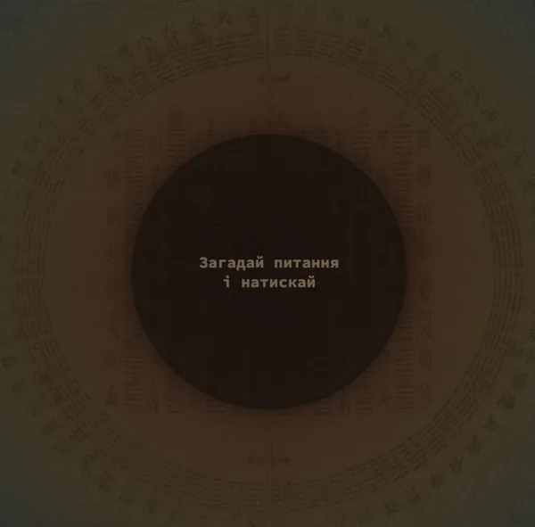

I Ching Digital Oracle
Overview
While exploring Carl Jung’s ideas on synchronicity, I discovered the ancient practice of divination using the I Ching — the Book of Changes. In the digital world, I couldn’t find a simple, calm, and non-overloaded interpretation of this ritual. Most existing tools felt either too mystical or too mechanical.
This project became my attempt to translate the essence of the ritual into a minimal digital experience — a small product created primarily for personal use, later shared with friends and close circles.
The interaction is intentionally simple and tactile. The user taps the screen six times. Each tap generates either one or two lines, forming a hexagram step by step — a subtle digital reflection of the traditional yarrow stick or coin method.
Once the hexagram is complete, the user receives a short interpretation from the I Ching — not as a prediction, but as a prompt for reflection during moments of uncertainty.
The interface avoids decoration and symbolic overload. Visual restraint preserves the feeling of a quiet ritual rather than a game or a fortune-telling app.

Outcome
The project became a small but meaningful tool for myself and others. Friends described it not as fortune-telling, but as a way to pause, externalize inner questions, and reframe uncertainty.
It also served as a personal experiment in vibe coding — designing not for metrics or scalability, but for atmosphere, rhythm, and psychological resonance.
You can try the project here: the-i-ching.vercel.app